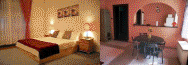
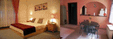

|
|
|
Esztergom
|
 |
Esztergom
- zu Deutsch: Gran - Das Erzbistum an der Donau, an der Grenze zur Slowakei,
liegt ca. 60 km nördlich von Budapest. Die mächtige Basilika
oben auf einer Bergkuppe ist die größte Kirche in Ungarn.
Sie erhielt ihre heutige Form im 19. Jahrhundert.
Sie ist von weitem sichtbar. Ihre Geschichte geht
jedoch bis zu den Zeiten vor der Staatsgründung im 9.
Jahrhundert zurück. |
 |
Esztergom
- Die Basilika ist Sitz des ersten ungarischen Bistums, liegt an der Nordspitze vom
Donauknie
an
der Grenze zur Slowakei. Ein Besuch im Kirchenmuseum ist für
kulturhistorisch interessierte ein Muss. Einige Stunden sollte man
schon dafür opfern. |
In
der 972 gebauten Burg war der Hl. Stefan, der erste gekrönte Oberhaupt
der Ungarn geboren. Er wurde im Jahre 1.000 in Székesfehérvár bzw.
Stuhlweißenburg (halbwegs zwischen Budapest und Plattensee) vom päpstlichen
Gesandten aus Rom zum König ernannt. Das Jahr 1.000 gilt daher als der
Beginn der Christianisierung Ungarns und zugleich als das Jahr der
Staatsgründung des bis dahin nomadisierenden, heidnischen Volkes der
Ungarn. Hier residierten die ersten
ungarischen Könige aus dem Haus der Árpáden.
|
| |
 |
Panorama-Luftaufnahme von Esztergom - rechts an der
Donau steht die Basilika, in der Bildmitte steht die
Maria-Valeria-Brücke (benannt nach der Spenderin, der
Tochter von Kaiser und König Franz Joseph I und
Elisabeth bzw. Lissi, die in
Deutschland aus den Sissi-Filmen bekannt ist). Die
Brücke führt nach Párkány bzw. Sturowo in der Slowakei. Klicke auf das
Bild.
|
|
Unsere
Empfehlung für motorisierte Esztergom-Touristen ist ein
Busuch des
ganzjährig
geöffneten Thermal-Strandbades im
nördlichen Nachbarland Slowakei direkt an der Grenze. Es
befindet sich
rechts, nur 1 km entfernt von der Donaubrücke, gut sichtbar von der
Basilika und auf dem obigen Pnoramabild noch vor den zwei
Paneltürmen - klicke auf das Panoramabild. Wir
kennen sehr viele
Thermalbäder, aber kein davon ist so kinderfreundlich wie dieses in Párkány
bzw. Sturowo in der Slowakei - ideal für die ganze Familie. |
 |
Vor
allem die echt ungarische Küche
im Gastrobetrieb
in der Slowakei
ist etwas, was die Ungarn abkupfern sollten - nicht zufällig,
denn in Sturowo/Slowakei wird Ungarisch gesprochen. Noch ein
Geheimtipp:
da ist fast alles
preisgünstiger, als in Ungarn und das Bier
der Slowaken schmeckt
nach unserer Meinung mindestens so gut, wie das beste aus Pilsen.
Ist man auf der slowakischen Seite der Donau in Sturovo, dann sollte
man einen Blick auf die Statue des polnischen Königs Jan
Sobieski
werfen und bedenken, ohne ihn wäre heute womöglich
ganz
Europa dem Islam ergeben. Im Jahre 1683, gleich nach Ende der
Belagerung von Wien, versammelten sich die Türken
erneut und
wollten diesmal mit allen verfügbaren Kräften
zurückschlagen. Jan Sobieski ist es gelungen, alle
christlichen Kräfte aus den Nachbarländern zu
mobilisieren
und die Türken weiter nach Süden
zurückzudrängen.
Die Schlacht war dermaßen kräftezehrend, dass die
christlichen Militärtruppen sich erst drei Jahre
später, im Jahre 1686 stark genug fühlten,
Buda und weitere Teile von Ungarn von der osmanischen Besatzungsmacht
zu
befreien.
|
 |
|
|
|
| |
|
Ungarn-Tourist Team

|
| |
| |
|

 
